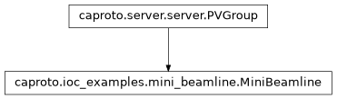

caproto.ioc_examples.mini_beamline.MiniBeamline¶

- class caproto.ioc_examples.mini_beamline.MiniBeamline(prefix: str, *, macros: Dict[str, str] | None = None, parent: PVGroup | None = None, name: str | None = None)[source]¶
A collection of detectors coupled to motors and an oscillating beam current.
An IOC that provides a simulated pinhole, edge and slit with coupled with a shared global current that oscillates in time.
MiniBeamline pvproperties¶ Attribute
Suffix
Docs
Type
Notes
Alarm Group
current
currentfloat
Read-only
Sub-groups¶ Attribute
Suffix
Class
Docs
ph
ph:Simulated pinhole
edge
edge:Simulated edge
slit
slit:Simulated slit
dot
dot:The simulated detector
Methods
group_read(instance)Generic read called for channels without get defined
group_write(instance, value)Generic write called for channels without put defined
Attributes
N_per_I_per_sdefault_valuestype_maptype_map_read_onlypvdbattr_pvdbattr_to_pvnamegroupspvproperty methods